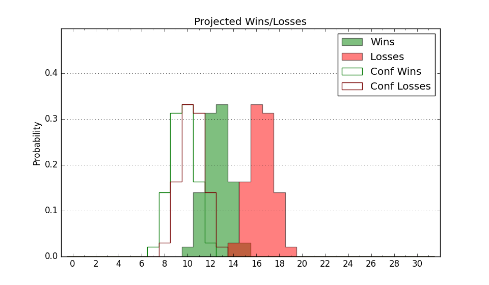

| Home | Game Probabilities | Conferences | Preseason Predictions | Odds Charts | NCAA Tournament |
| City: | Carbondale, Illinois | |
| Conference: | Missouri Valley (5th)
| |
| Record: | 7-8 (Conf) 10-14 (Overall) | |
| Ratings: | Comp.: -0.8 (168th) Net: -0.8 (171st) Off: 104.9 (191st) Def: 105.7 (167th) SoR: 0.0 (122nd) |
| Remaining | ||||||
|---|---|---|---|---|---|---|
| Date | Opponent | Win Prob | Pred. | |||
| 2/15 | Belmont (135) | 57.6% | W 82-80 | |||
| 2/19 | @ Murray St. (144) | 29.3% | L 66-72 | |||
| 2/22 | Valparaiso (225) | 74.9% | W 79-71 | |||
| 2/25 | Illinois St. (111) | 50.3% | W 74-73 | |||
| 3/2 | @ Indiana St. (215) | 43.5% | L 79-81 | |||
| Previous | Game Score | |||||
| Date | Opponent | Win Prob | Result | Off | Def | Net |
| 11/4 | (N) College of Charleston (164) | 49.0% | L 80-90 | -0.6 | -9.5 | -10.1 |
| 11/14 | @Oklahoma St. (98) | 19.1% | L 78-85 | 9.5 | -4.4 | 5.1 |
| 11/18 | North Dakota St. (119) | 52.0% | W 69-44 | -8.3 | 48.9 | 40.7 |
| 11/22 | @Florida (5) | 1.5% | L 68-93 | 7.3 | 2.9 | 10.1 |
| 11/25 | (N) Louisiana Tech (120) | 37.0% | L 79-85 | -8.5 | 8.7 | 0.2 |
| 11/26 | (N) Eastern Kentucky (171) | 50.4% | L 72-77 | -13.5 | -2.6 | -16.1 |
| 12/3 | Bradley (87) | 40.2% | L 60-83 | -16.1 | -11.3 | -27.4 |
| 12/7 | Southern Indiana (329) | 89.9% | W 73-70 | -5.2 | -15.5 | -20.8 |
| 12/14 | @Austin Peay (282) | 61.1% | W 65-60 | -2.8 | 3.2 | 0.4 |
| 12/21 | High Point (100) | 45.1% | L 81-94 | 3.6 | -18.6 | -15.0 |
| 12/29 | @Northern Iowa (103) | 19.8% | L 67-78 | -0.2 | -2.6 | -2.7 |
| 1/1 | Evansville (256) | 80.4% | L 53-68 | -27.5 | -9.8 | -37.3 |
| 1/5 | @Illinois St. (111) | 22.9% | L 54-85 | -25.2 | -8.7 | -34.0 |
| 1/8 | @Belmont (135) | 28.5% | L 86-90 | 14.0 | -10.4 | 3.6 |
| 1/11 | Missouri St. (219) | 73.4% | W 88-78 | 6.0 | -1.8 | 4.2 |
| 1/15 | @Missouri St. (219) | 44.7% | W 73-51 | 5.7 | 31.6 | 37.3 |
| 1/18 | Northern Iowa (103) | 45.7% | W 73-49 | 22.9 | 26.0 | 48.9 |
| 1/22 | Murray St. (144) | 58.5% | L 64-74 | -8.5 | -14.1 | -22.6 |
| 1/25 | @Illinois Chicago (125) | 25.6% | W 89-85 | 21.0 | -8.3 | 12.8 |
| 1/28 | @Valparaiso (225) | 46.7% | W 79-75 | 6.1 | -1.9 | 4.2 |
| 2/1 | Drake (62) | 28.2% | L 65-75 | 6.7 | -13.8 | -7.2 |
| 2/5 | @Evansville (256) | 54.6% | W 68-59 | 7.9 | 11.0 | 18.9 |
| 2/8 | Illinois Chicago (125) | 53.9% | W 79-67 | 4.6 | 10.5 | 15.1 |
| 2/12 | @Bradley (87) | 16.5% | L 64-78 | 5.0 | -8.8 | -3.7 |
| Stats & Trends | |||||
|---|---|---|---|---|---|
| Current | Day | Week | Month | Season | |
| Composite | -0.8 | -0.0 | +0.7 | +6.3 | +1.2 |
| Comp Rank | 168 | -- | +8 | +74 | +2 |
| Net Efficiency | -0.8 | -0.0 | +0.7 | +7.1 | -- |
| Net Rank | 171 | -- | +5 | +83 | -- |
| Off Efficiency | 104.9 | +0.2 | +0.4 | +4.0 | -- |
| Off Rank | 191 | +3 | +4 | +51 | -- |
| Def Efficiency | 105.7 | -0.2 | +0.3 | +3.1 | -- |
| Def Rank | 167 | -3 | +8 | +72 | -- |
| SoS Rank | 105 | +10 | +9 | +17 | -- |
| Exp. Wins | 12.6 | -0.2 | +0.4 | +4.1 | -1.3 |
| Exp. Conf Wins | 9.6 | -0.2 | +0.4 | +4.1 | +0.1 |
| Conf Champ Prob | 0.0 | -- | -- | -- | -5.0 |

| Advanced Stats | ||
|---|---|---|
| Stat | Value | Rank |
| Off Eff FG % | 0.510 | 160 |
| Off Ast Ratio | 0.155 | 121 |
| Off ORB% | 0.325 | 85 |
| Off TO Rate | 0.167 | 302 |
| Off FT Ratio | 0.348 | 131 |
| Def Eff FG % | 0.509 | 168 |
| Def Ast Ratio | 0.148 | 191 |
| Def ORB% | 0.263 | 89 |
| Def TO Rate | 0.138 | 249 |
| Def FT Ratio | 0.327 | 172 |